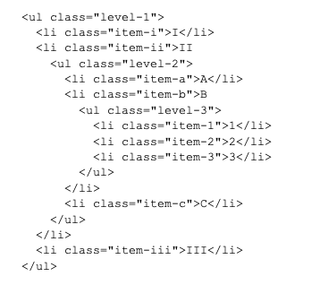
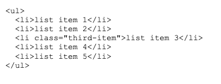
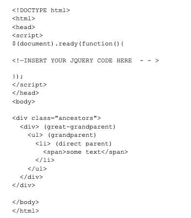

JQuery Quiz 3
1. Find the text in the first paragraph (stripping out the html), then set the html of the last paragraph to
show it is just text (the red bold is gone).
<!doctype html>
<html lang="en">
<head>
<meta charset="utf-8">
<title>text demo</title>
<style>
p {
color: blue;
margin: 8px;
}
span {
color: red;
}
</style>
<script src="http://code.jquery.com/jquery-1.9.1.js"></script>
</head>
<body>
<p><span>Test</span> Paragraph.</p>
<p></p>
<script>
<!—INSERT YOUR JQUERY CODE HERE - - >
</script>
</body>
</html>
$(document).ready(function(){
$("p").last().text($("p").first().text());
});
2. Write jQuery code to create a red background for the level-2 list items.

$(document).ready(function(){
$("ul ul li").css("background", "red");
});
3. Write jQuery code to select the element that comes immediately before item three and change its background color to blue.

$(document).ready(function(){
$(".third-item").before().css("background-clor", "blue");
});
4. Let us one additional requirement for the "Go Vegetarian" button of the Webville Eatery Menu
described in Chapter 4 of Head First jQuery: "Turkey" in the ingredient list of any entree is replaced by
"Mashed Potatoes" in the vegetarian version. You may assume there is a class "turkey" that identifies
these items in the list. Describe the changes to the Javascript (jQuery) code to implement this new
requirement.
$(“button#vegOn").click(function(){
$('.turkey').after("<li class=‘tofu’><em>Tofu</em></li>")
$f = $('.turkey').detach();
});
5. Write Javascript (jQuery) code to change the color of the parent and grandparent list items of the span
of text ("some text") in the following to green.

$(document).ready(function(){
$("span").parent().parent().css("background-color", "green");
)};